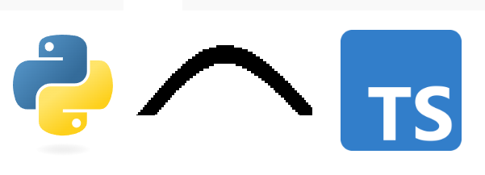

A pattern I enjoy with Copilot or other AI coding tools is something I'm calling "Language bridging":
Language bridging : Write code to solve a problem in a language you know well, then use an AI to translate the code into the language you want or need to use.

LLMs help to bridge the gap between my knowledge of different programming languages
The pattern looks like this for me:
I find that stage 2 - refactoring and commenting - improves the chances of success and makes it easier for me to understand the code after translation.
I mainly use this for Proof Of Concept (POC) building, personal projects, one-off tools and for exploring ideas. I don't find it efficient for general coding.
I find it especially effective where I am combining a number of simple actions (cli commands, file parsing, data transformation, image manipulation, etc.) in a custom way. LLMs are often very good at these simple tasks and they can combine them much more quickly than me in a programming language I don't use regularly.
python typescript ai